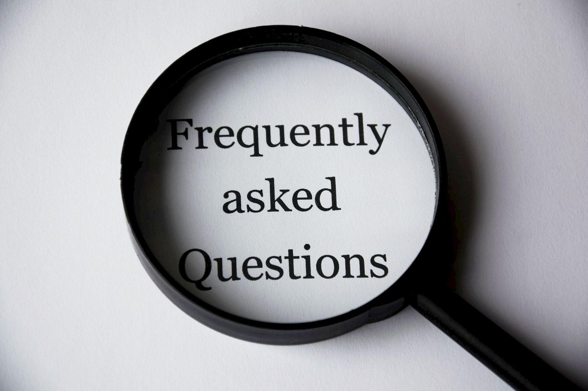

Frequently Asked Questions

Our research explores how infants and young children (ages 0–5) learn, think, and communicate. We study areas like early word learning, attention, memory, and social-emotional development to better understand how children acquire language and build foundational cognitive skills.
You'll visit the UMBC lab for a single 30-minute session. Your child will sit on your lap or nearby and view images or hear sounds while we observe responses like eye movement or attention. You’ll also complete a short questionnaire. Participation is safe, gentle, and designed to be engaging for young children.
Absolutely. All data and video recordings are confidential and coded anonymously. Only trained researchers on our team — led by Dr. Leher Singh — will access it. No identifying information is shared in publications.
Your child will be video-recorded so we can code the session after it is over for his/her responses. All videos are confidential, and will only be seen by members of our research team. Once your child's responses have been coded, the videos will be erased.
While there is no cash payment, your child will receive a small gift and a participation certificate.If needed, we can provide free parking or reimburse local travel expenses (up to a set limit)..
You can see current members of our team in the Our Team section of our website.
Yes to both! You're welcome to stay with your baby at all times, and siblings can relax in our play area during the visit. We aim to make your experience comfortable and enjoyable for the whole family..
If you would like to receive a written report of your child's vocabulary or cognitive development, there will be the option of administering a standardized test to your child after the conclusion of the language study.